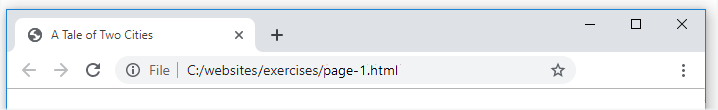
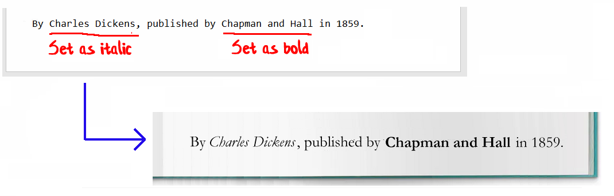
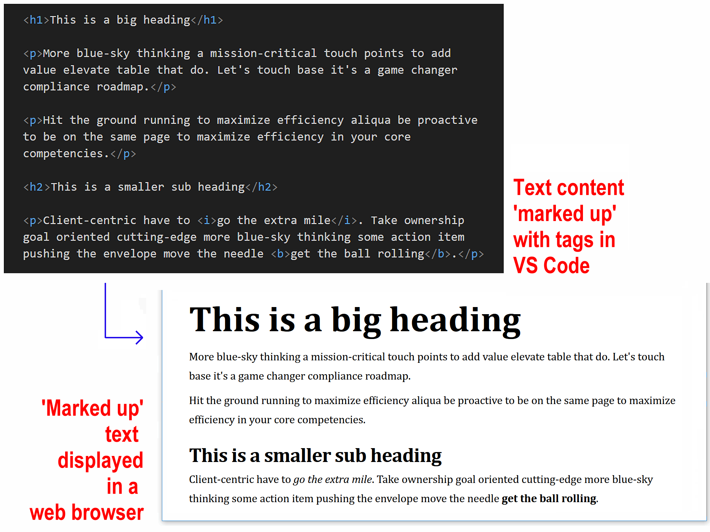
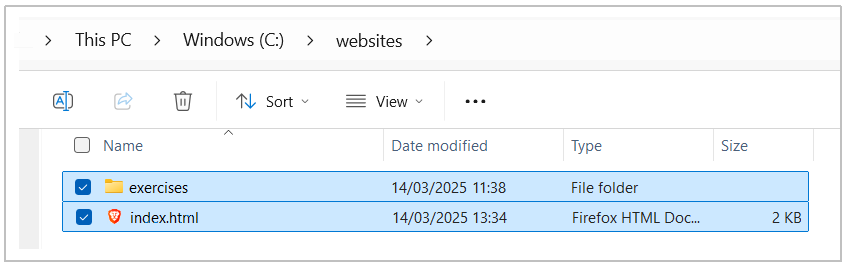

Learning Goals
At the end of this Tutorial you will be able to:
- Understand the basic <head> and <body> structure of an HTML file.
- In VS Code, use File| New Text File to create a blank web page.
- In VS Code, use File | Save As to create a new web page based on an existing web page.
- Add and customise standard <head> content for a web page.
- Copy-and-paste text content into the <body> of a web page.
- Mark-up text with heading, paragraph, bold and italics HTML tags.
- Add non-displaying HTML comments to a web page.
- Create hyperlinks between web pages.
- Upload web pages to your GitHub account.
HTML files: The basic structure
Every HTML file has two basic parts - the head and the body
head |
Technical stuff the web page needs to display properly. |
body |
The actual web page content visible to the user. |
In VS Code, the simplest possible web page looks as shown below.
Creating your first web page
You are now ready to create a new web page – that is, an HTML file. Here are the steps:
- On your Taskbar (Windows) or Dock (Apple Mac), click the icon to start Microsoft Visual Sudio Code (VS Code).

- Choose the File | New Text File command.
 VS Code creates a new, empty file in a new tab within your VS Code window.
It suggests the name of Untitled-1 for your new file.
VS Code creates a new, empty file in a new tab within your VS Code window.
It suggests the name of Untitled-1 for your new file.
 Let’s give your file a new name and save it as an HTML file.
Let’s give your file a new name and save it as an HTML file. - Choose the File | Save As... command.

- In the dialog box now displayed, save your file in the üìÅ exercises sub-folder of your üìÅ websites folder with this name:
page-1.html

DO NOT name your web page with an upper-case ‘P’ as in Page-1.html.
And DO NOT use some other combination of upper and lower-case letters, such as PAGE-1.HTML or page-1.HTML.
Also, DO NOT enter any blank spaces in the name of your file: type page-1.html NOT page - 1.html or page -1.html.
 Because you have included the file name extension (.html), you can ignore the second box named Save as type.
After typing the name of your file, click the Save button.
Notice how VS Code now displays the name of your page-1.html file at the top of the screen.
Because you have included the file name extension (.html), you can ignore the second box named Save as type.
After typing the name of your file, click the Save button.
Notice how VS Code now displays the name of your page-1.html file at the top of the screen.

✅ That’s it. You have successfully created your first sample web page.
Your folder and file structure should look as shown below.
Note that your page-1.html file is inside your üìÅ exercises folder, which is inside your üìÅ websites folder.
Adding the <head> and <body> structure
After creating and naming your new, empty page-1.html web page, your next task is to add the basic <head> and <body> structure to it.
VS Code offers a convenient shortcut for doing this.
- In VS Code, click anywhere in your empty web page and type the exclamation mark ! (Shift key and number 1 key).
 After one or a few seconds, the Emmet Abbreviation menu appears. Click on the first option from the menu. Or press either the Tab or Enter key.
After one or a few seconds, the Emmet Abbreviation menu appears. Click on the first option from the menu. Or press either the Tab or Enter key.
 VS Code now fills your new file with the basic HTML structure.
VS Code now fills your new file with the basic HTML structure.
 NOTE: The exclamation mark ! shortcut key is part of Emmet, a collection time-saving tools for web designers and developers that is pre-installed in VS Code.
NOTE: The exclamation mark ! shortcut key is part of Emmet, a collection time-saving tools for web designers and developers that is pre-installed in VS Code. - To make your web page easier to read and edit, add some blank lines after the closing </head> tag and before the opening <body> tag.
Click just before the <body> tag and press the Enter key one, two or three times.
 When you look at the HTML of your web page on the VS Code screen, you can now see visually ‘at a glance‘ where the <head> ends and the <body> begins.
When you look at the HTML of your web page on the VS Code screen, you can now see visually ‘at a glance‘ where the <head> ends and the <body> begins.

- Save your HTML file. You can choose the File | Save command from the menu. Or simply press the Ctrl key (Windows) or ⌘ key (Apple) and press the s (for Save) key.
✅ Well done. You have now created what is called a ‘valid’ web page.
Adding a title to the <head> of your web page
Now you will give a title to your web page.
- In the <head> of your page-1.html file, you can see that VS Code has given your page a default title of Document.
This text is located between the opening <title> and closing </title> tags.
<title>Document</title>
- Replace this with the following new text:
<title>A Tale of Two Cities</title>
- When finished, save your HTML file.
Adding a description to the <head> of your web page
Now you will add a summary description of the contents of your web page.
- In the <head> of your web page, at the end of the line that contains the <title> ... </title> tag pair, click with the mouse and then press the Enter key to open a new, blank line.
 Your web page should now look as shown below.
Your web page should now look as shown below.

- Copy the following line:
<meta name="description" content="A basic web page containing some text from A Tale of Two Cities, a novel published in 1859 by English author Charles Dickens.">
- Paste the copied text in your web page, on the new, blank line you created under the <title> tag.
See below.

- Save your page-1.html file.
✅ You are now finished working with the <head> of your first sample web page.
Displaying your web page
Let’s display your page-1.html web page in a web browser.
- Open File Explorer (Windows) or Finder (Apple Mac), and display the contents of your üìÅ websites/exercises sub-folder. Your choice of default web browser determines which icon is shown for your HTML files.
- Double-click the page-1.html file. This will open your default web browser to display the file. It should look as shown below. 
About the Title and Address bar
In the Title area at the top of your web browser you can see the title text ("A Tale of Two Cities") you entered in VS Code.
In the Address bar you can see the location of the web page on your computer is mirrored in the address of the web page.
You can also can see that the forward slash / character is used to separate the different parts of the web address.
Viewing the HTML code of a web page
In a web browser, you can view the source HTML code 'behind' any web page as follows:
- Right-click on any empty part of the web page.
- From the context menu displayed, choose the View page source command.

- Your web browser opens a new tab and displays the HTML source code of your web page.

You can now close this new browser tab.
Adding text to the <body> of your web page
In this section, you will copy-and-paste some text content to the <body> of your web page.
- Drag down and across all the text in the grey box below to select it.
A Tale of Two Cities
It was the best of times, it was the worst of times, it was the age of wisdom, it was the age of foolishness, it was the epoch of belief, it was the epoch of incredulity, it was the season of Light, it was the season of Darkness, it was the spring of hope, it was the winter of despair.
We had everything before us, we had nothing before us, we were all going direct to Heaven, we were all going direct the other way - in short, the period was so far like the present period, that some of its noisiest authorities insisted on its being received, for good or for evil, in the superlative degree of comparison only.
Small Heading
There were a king with a large jaw and a queen with a plain face, on the throne of England; there were a king with a large jaw and a queen with a fair face, on the throne of France. In both countries it was clearer than crystal to the lords of the State preserves of loaves and fishes, that things in general were settled for ever.Small Heading
All these things, and a thousand like them, came to pass in and close upon the dear old year one thousand seven hundred and seventy-five. Environed by them, while the Woodman and the Farmer worked unheeded, those two of the large jaws, and those other two of the plain and the fair faces, trod with stir enough, and carried their divine rights with a high hand.Smaller Heading
A wonderful fact to reflect upon, that every human creature is constituted to be that profound secret and mystery to every other. A solemn consideration, when I enter a great city by night, that every one of those darkly clustered houses encloses its own secret; that every room in every one of them encloses its own secret; that every beating heart in the hundreds of thousands of breasts there, is, in some of its imaginings, a secret to the heart nearest it!by Charles Dickens, published by Chapman and Hall in 1859.
- Right-click on the selected text and, from the context menu, choose Copy.

- In VS Code, with the page-1.html file open, click on the first blank line after the opening <body> tag.
 Now, paste the copied text.
Now, paste the copied text. - VS Code may add one or more blank lines after the opening <body> tag and before the pasted text. You can delete these blank lines.

- Save your file and then display it in your web browser.
As you can see, the web browser ignores any paragraph breaks in the file and displays all the text content as a single block.

This is because the content is not marked up with HTML tags.
Marking up text content
A lot has changed in the evolution from paper-based traditional printing to modern digital publishing. But the process remains the same.
- You start with text that is unformatted in any way - all the words are the same size and in the same colour.
- You then add instructions around the text that control the visual appearance of the final output.
In the past, editors would add handwritten notes that directed the printers how the text should be formatted in the final publication. See the examples below.
This process was called marking-up.
Marking up text in HTML
In web publishing, marking-up continues - but is now done by adding special characters called tags to the text in a HTML file.
Almost all HTML tags come in pairs: an opening (or start tag) and a closing (or end) tag.
HTML tags are enclosed with angle brackets < >. And the closing tag includes the forward slash / character. You can see some examples of marked-up text in an HTML file below.
Marking up content in your page-1.html file
Now you will mark-up the text of your web page with opening and closing pairs of the following HTML tags: <h1>, <h2>, <h3> and <p>.
- To type a < hold down the Shift ↑ key and type the , (comma) key.
- To type a > hold down the Shift ↑ key and type the . (full stop) key.
- To type a / press the key just to the right of the . full stop key.

Follow these steps:
- Wrap the main heading text “A Tale of Two Cities” within <h1> ... </h1> tags.
- Wrap the two “Small Heading” texts within <h2> ... </h2> tags.
- Wrap the “Smaller Heading” text within <h3> ... </h3> tags.
- Wrap the remaining paragraphs of text with <p> ... </p> tags.
- On the last line, wrap the words “Charles Dickens” within italics <i> ... </i> tags.
- And wrap the words “Chapman and Hall” within bold <b> ... </b> tags.
- The <body> of your HTML file should now look as shown below.

- Save your page-1.html web page file.
- Display your web page in your browser. It should now look as shown below.

✅ You have now finished working with your first sample web page.
Creating a home page for your website
In this section, you will use your sample web page named page-1.html as the basis for creating a front or ‘home’ page named index.html for your website.
- In VS Code, with the page-1.html file open, choose the File | Save As... command, and save your web page in your ‚Äòmain‚Äô üìÅ websites folder this new name:
index.html
 Your folder and file structure should look as shown below.
Your folder and file structure should look as shown below.
DO NOT name your web page with an upper-case ‘I’ as in Index.html.
And DO NOT use some other mixture of upper and lower-case letters, such as INDEX.HTML or index.HTML or whatever.
Also, DO NOT enter any blank spaces in the name of your file: type index.html NOT index .html

- In the <head> of your new index.html file, update the title and the description tags.
Here are a few examples you may wish to follow:
<title>Mary Smith | Creative Digital Designer</title> <meta name="description" content="Hi I'm Mary, a UI & UX designer based in Dublin. Mobile and Responsive Web Design, eCommerce Websites, Branding and Logo Design.">
<title>Mary Smith - Independent Web and Digital Developer</title> <meta name="description" content="Freelance Web and Digital Developer crafting innovative online experiences on the web and social media.">
<title>Purple Pixels, Galway's premier web agency</title> <meta name="description" content="We help new and growing businesses turn their ideas into attention-grabbing, customer-winning websites.">
The <head> of your web page should look similar to the sample below.
- Delete all the content from inside the <body> ... </body> tags of the web page.
 Next, you will update the text in the <body> of your home page.
Next, you will update the text in the <body> of your home page.
- Main heading: Typically, you will want to position your name or the name of your organisation as the top-level <h1> heading. For example:
<h1>Hi, I'm Mary Smith</h1>
Or:<h1>Purple Pixels Web Agency</h1>
- Sub-heading: For your second-level <h2> sub-heading, you will typically summarise your role or the products/services you offer. For example:
<h2>Web / UI Designer</h2>
Or:<h2>Digital Marketing for your business</h2>
- Descriptive text: Add one or a few short paragaphs about you or your organisation. For example:
<p>I created this website to showcase some of my recent web design work.</p>
Or:<p>We deliver digital success to showcase your business at its best.</p>
- Hyperlink: Finally, add a hyperlink that, when clicked or tapped, takes the user to your sample exercise web page:
<p><a href="exercises/page-1.html">A Tale of Two Cities</a></p>
In VS Code, your complete index.html web page should now look something like the following.
And in your web browser, your home page should look similar to that below.
✅ You have now finished working with your home web page.
Adding a back link to your sample page
As a final task, let’s add a hyperlink to your sample web page that, when clicked, brings the user back to your home web page.
- In VS Code, open the page-1.html sample web page you created earlier in your üìÅ websites/exercises sub-folder:
- At the end of the file, just before the closing </body> tag, copy-and-paste the following line.
<p><a href="../index.html">Back to Home page</a></p>
- When finished, save your sample web page.
- In your web browser, display the sample web page and verify the “Back to Home page” hyperlink works correctly.

✅ Task completed.
You will learn more about hyperlinks in the later Working with Hyperlinks and Styling Hyperlinks Tutorials.
Uploading your work to GitHub
Your final task is to upload your work to your account on GitHub.
Because your upload includes a folder and not just files, you must use the drag-and-drop method rather than the file select method.
- Open a new tab in your web browser and go to github.com. If you are not already signed in to your GitHub account, sign in now.

- On your GitHub home page, click the name of the repository (‘repo’) that holds your web pages. Its name will look as follows, where username is your chosen username on GitHub.
username.github.io

- On the next GitHub screen displayed, near the right of the screen, you can see a button named Add file. Click on it.

- From the dropdown list displayed, choose the option Upload files.

- In File Explorer (Windows) or Finder (Apple Mac), drag-and-drop your index.html file and your üìÅ exercises sub-folder to upload them to your repository on GitHub. 
- Scroll down to the bottom of the GitHub screen, and accept or edit the short message (Add files via upload) in the Commit changes box.
- Finally, click the green Commit changes button to upload your files.

Your web pages are now published on GitHub at web addresses similar to the following, where username is the username you have chosen for your GitHub account:
https://username.github.io/index.html
Or simply:
https://username.github.io
And:
https://username.github.io/exercises/page-1.html
It may take a few minutes for your uploaded files to appear on GitHub.
More learning resources
Tutorial Quiz
Tutorial Podcast
Sample AI prompts
For each one of the following prompts, copy the AI-generated HTML output, open VS Code, choose File | New Text File, and then paste in AI content into the new, empty file.
Choose File | Save to save your file in your üìÅ exercises folder. Name your file something.html. (Replace 'something' with a suitable file name.) Do NOT use capital letters or empty spaces in the file name.
Finally, switch to File Explorer (Windows) or Finder (Apple Mac), display your üìÅ exercises folder, and double-click on your new HTML file to display it a web browser.
Create the HTML for a basic web page about the world's top three soccer players.
In the <head>, include a title, description and responsive viewport tag
In the <body>, include one <h1> tag and three <h2> tags.
Add about 300 words of text about each soccer player, with a hyperlink to each player's entry on Wikipedia.
To make your output easier to read, add an empty line after each closing HTML tag.Create the HTML for a basic web page about three top-selling laptop computers.
In the <head>, include a title, description and responsive viewport tag
In the <body>, include one <h1> tag and three <h2> tags.
Add about 300 words of text about each laptop model, with a hyperlink to the website of the manufacturer.
Format important words using <b> and <i> tags.
To make your output easier to read, add an empty line after each closing HTML tag.
Adding comments to HTML code
In a web page, a comment is one or more lines of text that are visible only in the source code – but are not actually displayed in the web browser.
You can see an example of a short, one-line comment below.
<!-- This is a comment -->And here is an example of a longer, multi-line comment.
<!-- Generated by Animista on 2021-2-3 11:17:9 http://animista.net, t: @cssanimista -->Follow these steps to create a comment in VS Code.
By default, VS Code displays comments in a dark green colour.